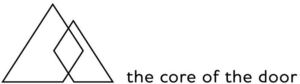

Trade Mark Journal No.2025/027 4 July 2025
WO0000001859518 (17,19,20,40)
Office of origin: European Union Intellectual Property Office (EUIPO)
Date of International Registration:4 March 2024
Date of designation in the UK:
4 March 2024

International priority date claimed: 4 September 2023
(Germany)
- Class 17
- Semi-finished goods (laminated plates), consisting mainly of synthetic materials, namely of synthetic resins, semi-processed, or of synthetic rubber, and also bonded with other materials (including wood, aluminium foil, insulating materials), including for vehicle construction; acoustic insulating boards, special insulating boards based on mineral fibres and wood fibres; acoustic insulating panels (composite panels), mainly of plastic bonded with other materials (including wood, aluminium foil, insulation materials), including for the construction of machines for insulation; acoustic boards, special insulating boards with a mineral fibre and wood fibre base; coating materials, decorative films and high pressure laminate made of plastic or manufactured using plastic, as semi-finished products; insulating materials and fillers for materials of wood and furniture parts; acoustic insulating sheets and panels (composite panels), mainly of plastic, bonded with other materials (including wood, aluminium foils, insulating materials), including for insulation in vehicle construction; acoustic boards, special insulating boards with a mineral fibre and wood fibre base; door accessories, in particular door seals, insulating materials for doors, filling materials for doors; assembly consumables for doors, in particular sealant compounds for joints, sealants, assembly foam; flexible pipes, tubes, hoses and fittings therefor (including valves), and fittings for rigid pipes, all non-metallic; seals, sealants and fillers; insulation and barrier articles and materials; unprocessed and partially processed materials not adapted for a specific use, included in this class, in particular polyester, mineral fibres, plastics as semi-finished products, elastomers, cellulose, fibres impregnated with synthetic resins, synthetic resins, semi-processed, and synthetic rubber, in particular carbon fibres, cellulose acetates, glass fibres and glass wool, cast nylon for use in production, chemical fibres not for textile purposes; microporous synthetic films for the manufacture of protective clothing, protective workwear, rainwear and for use in production, microporous synthetic strips for the manufacture of protective clothing, self-lubricating cast polyamides for use in production, synthetic fibres other than for textile purposes, viscose films other than for packaging and wrapping purposes, viscose sheets [semi-finished products], yarns of ceramic fibres [other than for textile purposes]; resins in extruded form; semi-worked plastic substances; finished and semi-finished products, adapted for a specific use, included in this class, in particular ebonite moulds, shock-absorbing buffers of rubber and packing materials of rubber or plastics, vibration dampers, insulating covers and sheaths, gaskets, rubber suspensions, pipe fittings and spacers, not of metal, rubber sheets for sealing purposes and filtering materials of semi-processed films of plastic, adhesive tapes, adhesive-coated plastic sheets and strips for use in manufacture, clutch linings, rubber material for recapping tyres and floral foam; fixing films of plastic, other than for wrapping and packaging, fibreglass tapes and strips for insulation, marking tapes for insulation, rubber bags, protective rubber articles for insulating purposes, in particular protective asbestos screens, rubber band, rubber handles and pads, plastic soldering threads, plastic stoppers, statues and works of art, in particular decorative mica badges, decorative rubber objects [emblems], rubber figures, decorative plastic foils as semi-finished products; unprocessed and semi-processed rubber, gutta-percha, gum, asbestos, mica and substitutes for all these materials; plastics and resins in extruded form for use in manufacturing processes; sealing materials; packing materials; insulating materials; flexible pipes, tubes and hoses, not of metal; fasteners, connectors for cables or lines, fasteners, connectors for pipes; clack valves of rubber; parts and accessories for all the aforesaid goods, included in this class.
- Class 19
- Wall and ceiling lining elements of wood; wood, in particular plywood, veneers, veneer panels, blockboard, sawn timber, slatted and laminated panels and sawn timber; shaped parts, including curved, being semi-finished products, panels, prefabricated doors, all of these products made of wood and of wood particles or fibres; chipboard; curved mouldings being semi-finished goods made of wood, chipboard and wood-fibre reinforced cement boards; windows and doors of wood, window, gate and door casings of wood, window, gate and door frames of wood, jamb liners and door panels of wood; all the aforesaid goods with or without surface treatment or surface finishing; doors, door leaves, door linings, door frames and combinations of the aforesaid goods; all of the aforesaid goods for indoor or outdoor use; fire-resistant wooden doors and fire-resistant panels, not of metal, for building; functional doors for indoor or outdoor use; functional door panels and functional door frames for various applications or with the properties of smoke protection, fireproofing, sound proofing, burglar resistance, protection against radiation, bullet resistance, moisture proofing, wet room proofing, with or without protection against electromechanical, climatic, chemical, biological, electromagnetic constraints; all the aforesaid goods, varnished or unvarnished, of wood, wood materials, plastic (including decorative foils and laminates), glass, metal, mineral and/or textile materials or of combinations of the aforesaid materials; boards of wood and building boards of plastic materials; rods, profiles, edges and elements of wood, wooden composites, paper and cardboard, minerals and plastics, for furniture manufacturing and interior decorating; veneering; panels and panel-shaped materials, mainly of wood and derived timber products, also in combination with paper, melamine resin paper, plastic and/or plastic foils, minerals and mineral or glass fibres and mineral or glass wood, in particular wood panels, hardboard, chipboard, laminated board, plywood and wood core plywood panels in worked and unworked form, unprocessed, coated, veneered and/or with thin chipboard or thin mdf covers; multilayer panels of plastic or wood for use in building, in particular intermediate layers therefor; sheets and panels (composite panels), consisting mainly of wood or wood materials, bonded with other materials (including aluminium foil, insulating materials), including for furniture manufacturing and vehicle construction; boards and panels (composite panels), mainly of plastic, glued together with other materials (for example wood, aluminium foil, insulating materials), including for furniture manufacturing and vehicle construction, not of metal; door blanks, in particular front door blanks or interior door blanks, in machined and unmachined form, predominantly made of wood and wood-based materials, also in combination with other materials, in particular polyurethane foam, insulating materials, metal and/or steel; panel blanks for doors; multilayer chipboard, including with a covering layer for protection against grinding dust; building materials and construction elements, not of metal, in particular of wood and wood-based materials, also in combination with paper and plastic films, mineral materials and mineral or glass fibres and mineral or glass wool, in particular raw, coated and veneered wooden boards, hardboard, chipboard, laminate, plywood and blockboard in processed and unprocessed form, window sills; veneers; panels mainly of wood and derived wood products, including in combination with paper, melamine resin paper, synthetic materials and/or plastic films, mineral substances and mineral and/or glass fibres and mineral and/or glass wool, in particular raw, coated and veneer panels, hardboard, chipboard, laminate and plywood boards and wood core plywood in processed and unprocessed form and/or boards of wood, hardboard, chipboard; laminate and plywood panels and wood core plywood in processed and unprocessed form, covered with thin chip coverings or thin mdf coverings; intermediate layers for the manufacturing of composite panels; sheets (laminated sheets), mainly consisting of wood or wood-derived goods and bonded with other materials (including aluminium foil, insulating materials); exterior door blanks or front door blanks, in processed and unprocessed form, predominantly made of wood and derived wood products, also in combination with other materials, in particular polyurethane foam, insulating materials, metal or steel; doors, gates, windows and window coverings, not of metal; construction sets and construction kits, especially for doors, for example for indoor or outdoor use, namely door panels, not of metal, door jamps, not of metal, door units, not of metal, inner and outer doors, not of metal; non-metal door panels incorporating acoustic insulation or consisting of furring strips, for indoor or outdoor use; non-metal door panels incorporating acoustic insulation consisting of linings for indoor or outdoor use; lining elements, in particular lining panels or furring strips, for example for doors, for indoor or outdoor use; structures and transportable buildings, not of metal; unprocessed and partially processed materials, not adapted for a specific use, included in this class, namely pitch, tar, bitumen and asphalt, stone, rock, clay and minerals, wood and imitations of wood; statues and works of art made from materials including stone, concrete and marble, included in this class; materials, not of metal, for building and construction; non-metallic rigid pipes for building; asphalt; pitch; tar; bitumen; monuments, not of metal; casings and of wooden window, gate and door frames; boards and panel-like materials, rails, profiles, edges and elements of wood, derived wood products, paper and cardboard, mineral substances and synthetic materials for the manufacture of furniture and interior decorations, in particular raw, coated and veneered boards of wood, hardboard, chipboard, laminated and plywood panels and wood core plywood in processed and unprocessed form and/or boards of wood, hardboard, chipboard, laminated and plywood panels; sheets (laminated sheets), mainly consisting of wood or wood-derived goods and bonded with other materials (including aluminium foil, insulating materials) including for furniture manufacturing and vehicle construction; sheets (laminated sheets), mainly consisting of synthetic materials and bonded with other materials (including wood, aluminium foil, insulating materials) for furniture manufacturing; panels or moulded parts for furniture made using wood and/or lignified plant parts; parts and accessories for all the aforesaid goods, included in this class.
- Class 20
- Bed bases; countertops; assembly consumables for doors, in particular retaining clips, spacers, spacer wedges, connecting clips, cover caps, none of these goods being of metal; furniture; parts for furniture; mouldings of wood being furniture parts; furniture parts, drawers as furniture parts, key hooks [parts of furniture], casings and wooden window, gate and door frames; lath sheets and laminated sheets being furniture parts; all the aforesaid goods with or without surface treatment or surface finishing; furniture made of paper and cardboard; furniture parts; goods, not of metal, in particular mooring buoys, locks and keys, door, gate and window fittings, valves of plastic, other than parts of machines, spindles, clamps, structural joint connectors, not of metal, hand fans, hand-held fans, non-metallic hooks for clothes rails, furniture handles, not of metal, structural joint connectors, not of metal; hooks being small items of hardware, not of metal; identification bracelets made of plastic, mouldings for furniture, pennant holders, dowels, protectors and support equipment, winding spools, not of metal, non-mechanical, for flexible hoses, stiffening materials, curtain rings; split rings, not of metal, for keys, poles, saw benches, mats for sinks, spacer rings for curtains, intermediate layers for bath tubs, staircase fittings, spiral springs; staves, scratching posts and masts for cats, suction cups, overhead rail systems, trailers, tension rollers for curtain or clothes, tent pegs, not of metal, paper towel holders [fixed] and trays, not of metal; statues, figurines, works of art and ornaments and decorations, made of materials such as wood, wax, plaster or plastic, included in the class; animal housing and beds; unprocessed and partially processed materials, not adapted for a specific use, included in this class, in particular amber, animal parts, meerschaum, plant parts; containers, and closures and holders therefor, non-metallic; ladders and movable steps, non-metallic; displays, stands and signage, non-metallic; mirrors (silvered glass); picture frames; containers, not of metal, for storage or transport; unworked or semi-worked bone, horn, whalebone or mother-of-pearl; shells; meerschaum; yellow amber; parts and accessories for all the aforesaid goods, included in this class.
- Class 40
- Material processing, treatment and transformation, in particular surface finishing, decorative coating and decorative lamination, also with veneers, of building materials, of construction materials, of panels, of panel-shaped materials, of boards, of board-shaped materials, of mouldings, of rails, of elements and of furniture parts; custom manufacture and assembly services; food and beverage treatment; preservation of food; preservation of drink; energy production; recycling and waste treatment; recycling of waste and trash; printing, and photographic and cinematographic development; printing; printing services; duplication of audio and video recordings; air and water conditioning and purification; slaughtering of animals; rental of equipment for the treatment and transformation of materials, for energy production and for custom manufacturing; rental of objects in connection with the providing of the aforesaid services, included in this class; consultancy and information in relation to the aforesaid services, included in this class.
Moralt AG
Representative: RGTH Patentanwaelte PartGmbB, Sendlinger Str. 2 / III, 80331 München, GERMANY